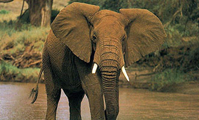
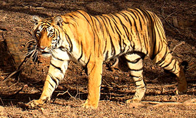
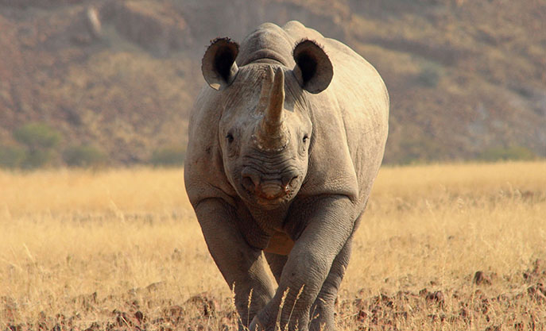

Elephant's tusks are used for a variety of essential purposes in an elephant's daily life. These tusks are a significant source of ivory which is used in ivory ornaments and jewelry, and estimated levels of illegal elephant killings in Central Africa have been occurring at unsustainable levels relative to natural population growth.
The Grevy's zebra was once widespread in Kenya and Ethiopa. Today, the country is home to only a couple thousand of these animals. Hunting is the primary cause of decline of Grevy・s zebras in Ethiopia. They are primarily hunted for their striking skins but will occasionally be killed for food, and in some regions, medicinal uses continue.

Many Asian nations have a relationship with the tiger going back hundreds, of years. However recent interest in Traditional Chinese Medicine from China and Southeast Asia has kept tiger poaching profitable in recent decades. Due to believe the tiger has supernatural, restorative powers the animals are valued for their virtually all of their parts.

Just 150 years ago, Africa's savannahs teemed with over a million black and white rhinos. Both species are at risk due to a huge surge in poaching to meet demand for illegal rhino horn, primarily in Asia. Poaching also escalated as demand grew for rhino horn, a prized ingredient in traditional Asian medicines - leaving both species at risk.
The commercial trade in bushmeat, which occurs throughout west and central Africa, is today the biggest threat to gorillas.Apes are being killed to primarily to supply high-end demand for meat in urban centers, where the consumption of ape meat is considered to be prestigious amongst the wealthy elite.